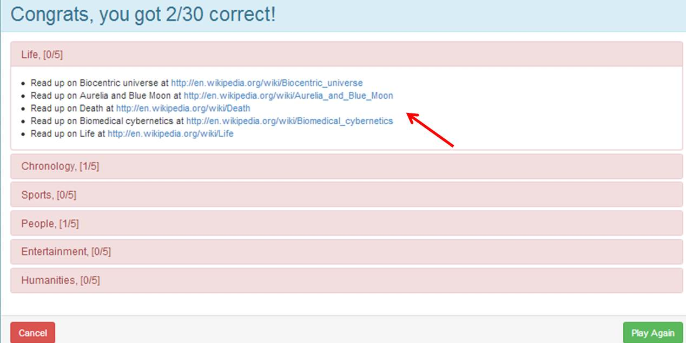

EECS 493 Winter'14
Mark Mevorah, Vertika Srivastava, Roy Chou, Pauline Low
An educational online trivia game that uses Wikipedia as the source for questions.
1. Log in as a registered user.
2. Click on the Play tab to choose six categories that you want your questions to be on.
3. Click Start Game! and experience 5 minutes of intense concentration to clear the game board.
4. Green indicates a correct answer and red indicates an incorrect answer.
5. After 5 minutes have passed or you clicked Give up.. man, view your results on the Results page and find Wikipedia links related to the questions you answered incorrectly.
